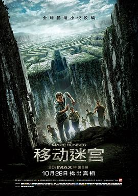

移动迷宫 / The Maze Runner
又名：迷宫行者
Trapped 类型的片子都蛮好看的，比如Hunger Game以及Escape Plan，第一部都很吸引人~这部电影原名叫《迷宫跑酷》
作品信息
| 导演 | 韦斯·鲍尔 |
| 编剧 | 诺亚·奥本海姆 / 格兰特·迈尔斯 / T·S·诺林 / 詹姆斯·达什纳 |
| 主演 | 迪伦·奥布莱恩 / 阿梅尔·艾米恩 / 李起弘 / 布雷克·库珀 / 托马斯·布罗迪-桑斯特 / 威尔·保尔特 / 德克斯特·达登 / 卡雅·斯考达里奥 / 克里斯·谢菲尔德 / 乔·阿德勒 / 亚历山大·弗洛里斯 / 雅各布·拉提摩尔 / 兰德尔·D·坎宁安 / 派翠西娅·克拉克森 / 唐·麦克马纳斯 |
| 类型 | 动作 / 科幻 / 冒险 |
| 制片国家/地区 | 美国 / 英国 |
| 语言 | 英语 |
| 上映日期 | 2014-10-28(中国大陆) / 2014-09-19(美国) |
| 片长 | 113分钟 |
| IMDb | tt1790864 |
| 官方小站 | 《移动迷宫》小站 |
说过什么
2015-11-18 22:55:44
看过 · 时间来自广播，短评来自标记页
Trapped 类型的片子都蛮好看的，比如Hunger Game以及Escape Plan，第一部都很吸引人~这部电影原名叫《迷宫跑酷》
最后一次看到是 2026-08-01T11:06:46+10:00 · 豆瓣原页